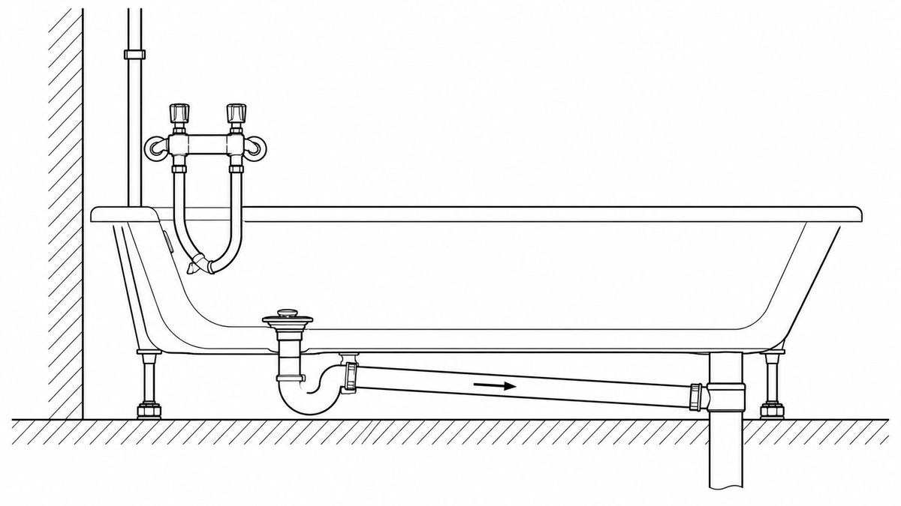

выводы под настенный смеситель ванны — на высоте 600–700 мм от пола с межосевым расстоянием 150 мм, под смеситель на борту — на 150–200 мм выше борта. Слив — труба 40–50 мм с уклоном 20–30 мм на метр. Подводка — PPR, PEX или медь, запорные краны на каждой линии, редуктор 3–4 бар. Разводка к ванне обходится в 15 000–45 000 руб. Главная ошибка — выводы «на глаз»: смеситель с межосевым 150 мм не встанет на 120 или 180 мм без переделки.
Высота и межосевое расстояние

| Тип смесителя | Высота выводов | Межосевое |
|---|---|---|
| Настенный для ванны | 600–700 мм от пола | 150 мм |
| Настенный с душем | 900–1100 мм от пола | 150 мм |
| На борту ванны | 150–200 мм выше борта | по модели |
| С термостатом | 900–1100 мм | 150 мм |
| Скрытый (встраиваемый) | по монтажной схеме | по модели |
Межосевое 150 мм — стандарт для 90 % настенных смесителей. Если смеситель уже куплен, выводы делают строго по его монтажной схеме: у термостатов бывает 150 ± 2 мм и глубина посадки 45–55 мм от плоскости плитки.
Трубы: что выбрать
| Материал | Цена за п.м | Плюсы | Минусы |
|---|---|---|---|
| Полипропилен PPR | 120–250 руб. | дешево, пайка без резьбы | нужны компенсаторы, боится УФ |
| Сшитый полиэтилен PEX | 180–350 руб. | гибкий, минимум соединений | нужны пресс-фитинги |
| Металлопластик | 150–300 руб. | гнётся руками | фитинги слабее, текут через 8–10 лет |
| Медь | 450–900 руб. | служит 50 лет | дорого, пайка |
| Нержавеющая гофра | 250–500 руб. | простой монтаж | не для скрытой прокладки |
Для скрытой прокладки в стене берут PPR, PEX или медь. Металлопластик в штробе — риск: фитинги с обжимными кольцами текут через 8–10 лет, а вскрывать плитку дорого. Гофра — только для открытой подводки к смесителю.
Слив и уклоны
| Участок | Диаметр | Уклон |
|---|---|---|
| От ванны до стояка | 40–50 мм | 20–30 мм/м |
| Общий лежак | 50 мм | 20–30 мм/м |
| Перелив ванны | 40 мм | без уклона |
| Сифон | 40 мм | по конструкции |
Уклон меньше 20 мм/м — засоры, больше 30 мм/м — вода уходит, а твёрдые частицы остаются. Слив ванны подключают через сифон с сухим затвором или гидрозатвором: без него из стояка тянет запах.
Запорная арматура и защита
| Элемент | Зачем | Цена |
|---|---|---|
| Шаровые краны на выводах | отключить ванну без стояка | 600–1 800 руб./шт. |
| Редуктор давления | защита от 6+ бар | 2 000–5 000 руб. |
| Обратный клапан | не смешивать горячую и холодную | 500–1 500 руб. |
| Фильтр грубой очистки | песок и ржавчина | 1 200–3 500 руб. |
| Коллектор с гребёнкой | отдельные линии | 3 500–9 000 руб. |
Краны ставят до штробления: после укладки плитки добраться до них можно только через ревизионный люк. Редуктор на 3–4 бар продлевает жизнь картриджу смесителя в 2–3 раза.
Смета 2026
| Позиция | Стоимость |
|---|---|
| Трубы PPR/PEX, 12–16 м | 3 000–6 000 руб. |
| Фитинги, тройники, уголки | 2 500–6 000 руб. |
| Краны, редуктор, фильтр | 5 000–12 000 руб. |
| Слив 40–50 мм, 4–6 м | 1 500–4 000 руб. |
| Работа: штробление и пайка | 8 000–20 000 руб. |
| Опрессовка и пуск | 2 000–5 000 руб. |
Итого 22 000–53 000 руб. под ключ. Если меняется стояк и ввод — добавляется 12 000–30 000 руб.
Опрессовка и приёмка
Опрессовку делают до закрытия штроб и укладки плитки: система заполняется водой, давление поднимается до 6 бар (для квартирных сетей — в 1,5 раза выше рабочего), выдерживается 30 минут. Падение давления больше 0,5 бар — где-то утечка.
| Этап | Параметр | Что проверяют |
|---|---|---|
| Заполнение | медленно, без гидроудара | воздух из системы удалён |
| Подъём давления | до 6 бар | манометр держит |
| Выдержка | 30 минут | падение не больше 0,5 бар |
| Осмотр | все соединения | нет капель и запотевания |
| Повтор через сутки | 6 бар | контроль скрытых соединений |
Фото и видео опрессовки сохраняют: если через год появится протечка, будет понятно, что делали и при каком давлении. Опрессовка стоит 2 000–5 000 руб., переделка скрытой разводки — 20 000–50 000 руб.
Ванна, раковина и унитаз в одном узле
Когда в санузле три прибора, разводку собирают от одного коллектора: отдельные линии на ванну, раковину и унитаз, каждая со своим краном. Это дороже на 3 500–9 000 руб., но позволяет отключать прибор по отдельности.
| Прибор | Линия | Слив |
|---|---|---|
| Ванна | 2 вывода 1/2" | 40–50 мм |
| Раковина | 2 вывода 1/2" | 40 мм |
| Унитаз | 1 вывод 1/2" | 110 мм |
| Стиральная машина | 2 вывода 1/2" | 40 мм |
| Гигиенический душ | 2 вывода 1/2" | — |
Унитаз подключают к трубе 110 мм с уклоном 20–30 мм/м. Отвод 50 мм в 110 мм врезают через косой тройник — прямой тройник даёт засоры на повороте.
Гибкая подводка: где можно и где нельзя
- Гибкая подводка — только открыто, от крана до смесителя, длина до 500 мм.
- В штробе и под плиткой — запрещено: резина стареет и рвётся без предупреждения.
- Срок службы гибкой подводки — 5–8 лет, менять превентивно.
- Оплётка из нержавейки лучше резиновой: держит давление 10 бар.
- Подводку не перегибать: радиус изгиба не меньше 3 диаметров.
Скрытая подводка к смесителю — это жёсткая труба с эксцентриками, а не гибкий шланг. Если мастер предлагает «шланг в штробу, так быстрее» — это протечка через 3–5 лет и вскрытие плитки.
Порядок работ
- Определить модель смесителя и взять его монтажную схему.
- Разметить выводы: высота 600–700 мм, межосевое 150 мм.
- Проштробить трассы, установить закладные и крепления.
- Смонтировать коллектор, краны, редуктор и фильтр.
- Спаять или опрессовать трубы, вывести их строго по уровню.
- Смонтировать слив с уклоном 20–30 мм/м.
- Опрессовать систему 6 бар на 30 минут, проверить отсутствие капель.
Ошибки и их цена
| Ошибка | Последствие | Исправление |
|---|---|---|
| Межосевое 120 или 180 мм | смеситель не встаёт | переделка выводов 6 000–15 000 руб. |
| Выводы глубже 55 мм | не накрутить эксцентрики | наращивание, вскрытие плитки |
| Уклон слива 10 мм/м | засоры каждые 3–6 месяцев | перекладка слива |
| Нет кранов на выводах | замена смесителя только со стояком | люк и монтаж кранов |
| Металлопластик в штробе | протечка через 8–10 лет | полная замена разводки |
Чек-лист перед штроблением
- Модель смесителя известна, схема на руках.
- Высота выводов 600–700 мм, межосевое 150 мм.
- Глубина посадки 45–55 мм от плоскости плитки.
- Краны и редуктор в зоне ревизионного люка.
- Уклон слива 20–30 мм/м.
- Опрессовка 6 бар до закрытия штроб.
Частые вопросы
На какой высоте делать выводы под смеситель ванны?
600–700 мм от пола для обычного настенного смесителя и 900–1100 мм для модели с душем. Межосевое — 150 мм.
Какое межосевое расстояние стандартное?
150 мм. У некоторых термостатов — 150 ± 2 мм, проверяйте монтажную схему конкретной модели.
Какой уклон нужен для слива ванны?
20–30 мм на метр погонный. Меньше — засоры, больше — вода уходит без твёрдых частиц.
Что лучше для скрытой разводки — полипропилен или металлопластик?
Полипропилен или PEX. Металлопластик с обжимными фитингами в штробе течёт через 8–10 лет.
Нужны ли краны на выводах к ванне?
Да. Без них замена смесителя требует отключения стояка и согласования с соседями.
Сколько стоит разводка труб к ванне?
22 000–53 000 руб. под ключ с материалами и опрессовкой. С заменой стояка — плюс 12 000–30 000 руб.
Источники
Материал подготовлен с опорой на следующие документы и данные:
Дисклеймер
Материалы журнала «Ремонт на примерах» носят информационный характер. Приведённые цены, сроки и нормативы являются ориентировочными: они зависят от региона, состояния объекта, уровня исполнителей и текущей рыночной ситуации, поэтому не могут служить точной сметой или гарантией результата. Перед началом работ проконсультируйтесь со специалистами и проверяйте актуальные требования нормативных документов. Редакция не несёт ответственности за решения, принятые на основании этих материалов.